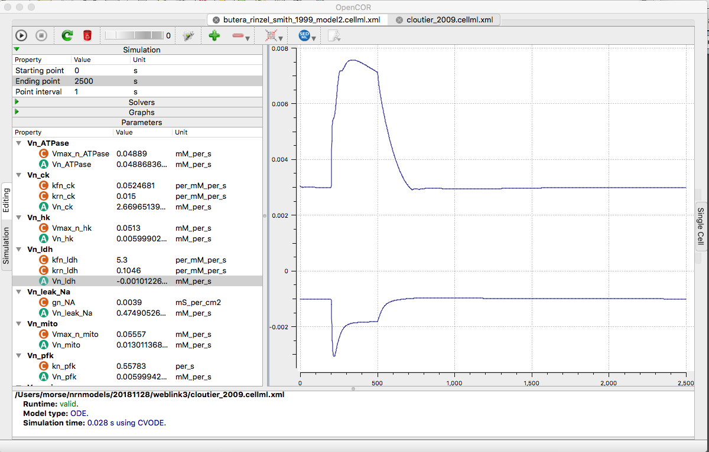

The models for the paper:
Cloutier M, Bolger FB, Lowry JP, Wellstead P (2009) An integrative dynamic model of brain energy metabolism using in vivo neurochemical measurements. J Comput Neurosci 27:391-414
10.1007/s10827-009-0152-8
are available in cellml at cellml.org:
https://models.cellml.org/exposure/6e249a04f5c751e42ba41504d84e6e49/cloutier_2009.cellml/view
Example: Selecting Vn_ldh and Vg_ldh (with right clicks in parameter panel) to plot against variable of integration after running the simulation recreates fig 2g in the paper:
